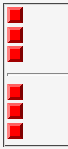
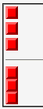

文字列が存在しない行の高さを算出するとき、line-heightプロパティの値やベースラインより下の部分（ディセンダ）の高さを無視する。しかし、li要素の最後の行ではディセンダの高さを無視しない。従って、行の高さの算出が統一されていないことになる。
<ul style="margin:0; padding:0;"> <li style="margin:0; padding:0; list-style:none;"> <img src="../img/img02.png" alt="■"></li> <li style="margin:0; padding:0; list-style:none;"> <img src="../img/img02.png" alt="■"></li> <li style="margin:0; padding:0; list-style:none;"> <img src="../img/img02.png" alt="■"></li> </ul> <hr> <div style="margin:0; padding:0;"> <img src="../img/img02.png" alt="■"></div> <div style="margin:0; padding:0;"> <img src="../img/img02.png" alt="■"></div> <div style="margin:0; padding:0;"> <img src="../img/img02.png" alt="■"></div>
li要素とdiv要素に同じスタイルを設定しています。
※Netscape7.02は厳格な標準モード（Almost Standards Modeではない）で表示させた場合のスクリーンショットです。
N7.02での表示（標準モード）
WinIE6.0での表示（標準モード）
WinIEでリスト要素を用いて上下に画像を敷き詰めたい場合はline-height、vertical-align、font-sizeの各プロパティを設定する必要があります。ただし、WinIE5.0/5.5ではこのスタイルを適用しても隙間が発生します。
<style type="text/css">
li.f {
font-size: 0;
line-height: 0;
vertical-align: bottom;
list-style-type: none;
}
</style>
<ul style="margin:0; padding:0;">
<li class="f"><img src="../img/img02.png" alt="■"></li>
<li class="f"><img src="../img/img02.png" alt="■"></li>
<li class="f"><img src="../img/img02.png" alt="■"></li>
</ul>
ちなみに、このような方法を採らなくても敷き詰められる方が間違った実装です。詳しくはこちらを参照してください。
WinIE6.0標準モード、WinIE6.0互換モードで不具合の発生が確認されました。